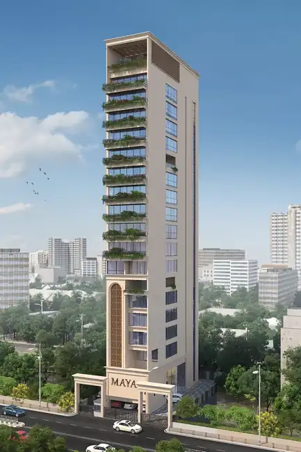

ARCHITECTURE / RESIDENTIAL
MAYA
A tall, slender architectural direction defined by layered planted terraces, large glazed openings and a strong vertical screen element.

ARCHITECTURAL DIRECTION
Visual reading of the supplied architectural references.
A tall, slender architectural direction defined by layered planted terraces, large glazed openings and a strong vertical screen element.
Project information is intentionally limited to what can be read from the supplied imagery.
